전기기사 (2003-08-10 기출문제)
1과목: 전기자기학
1. 영구자석의 재료로 적당한 것은?
- 잔류 자속밀도가 크고 보자력이 작아야 한다.
- 잔류 자속밀도가 작고 보자력이 커야 한다.
- 잔류 자속밀도와 보자력이 모두 작아야 한다.
- 잔류 자속밀도와 보자력이 모두 커야 한다.
(정답률: 74%)

2. 액체 유전체를 포함한 콘덴서 용량이 C[F]인 것에 V[V]의 전압을 가했을 경우에 흐르는 누설전류는 몇 A 인가? (단, 유전체의 유전률은 ε, 고유저항은 ρ[Ω.m]이다.)
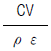
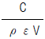
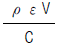
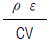
(정답률: 76%)
3. W1과 W2의 에너지를 갖는 두 콘덴서를 병렬 연결한 경우의 총 에너지 W와의 관계로 옳은 것은? (단, W1≠W2 이다.)
- W1+W2 =W
- W1+W2 ＞W
- W1+W2 ＜W
- W1-W2=W
(정답률: 75%)
4. 대지의 고유저항이 ρ[Ωㆍm]일 때 반지름 a[m]인 반구형 접지전극의 접지저항은 몇 Ω 인가?
- 2πρa
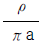
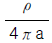
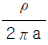
(정답률: 70%)
5. z방향으로 진행하는 평면파로 맞지 않는 것은?
- z성분이 0 이다.
- x의 미분계수(도함수)가 0 이다.
- y의 미분계수가 0 이다.
- z의 미분계수가 0 이다.
(정답률: 63%)
6. 폐곡면으로부터 나오는 유전속(dielectric flux)의 수가 N일 때 폐곡면내의 전하량은 얼마인가?
- N
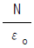
- εo N
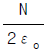
(정답률: 40%)
7. 100회 감은 코일과 쇄교하는 자속이 1/10 초 동안에 0.5Wb에서 0.3Wb로 감소했다. 이 때 유기되는 기전력은 몇 V인가?
- 20
- 80
- 200
- 800
(정답률: 75%)
8. div E =
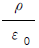
와 의미가 같은 식은? (단, E :전계, ρ:전하밀도, ε0 :진공의 유전률이다.)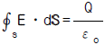
- E = -gard V
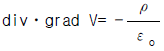
- divㆍgrad V=0
(정답률: 53%)
9. 유전률 ε인 유전체를 넣은 무한장 동축 케이블의 중심 도체에 q[C/m]의 전하를 줄 때 중심축에서 r[m](내외반지름의 중간점)의 전속밀도는 몇 C/m2 인가?
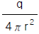
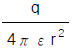
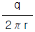
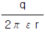
(정답률: 35%)
10. 무한히 넓은 도체 평면판에 면밀도 σ[C/m2]의 전하가 분포되어 있는 경우 전력선은 면(面)에 수직으로 나와 평행하게 발산한다. 이 평면의 전계의 세기는 몇 V/m인가?
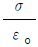
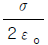
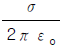
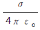
(정답률: 59%)
11. 평행 도선에 같은 크기의 왕복전류가 흐를 때 두 도선 사이에 작용하는 힘과 관계되는 것 중 옳은 것은?
- 간격의 제곱에 반비례한다.
- 간격의 제곱에 반비례하고, 투자율에 반비례한다.
- 전류의 제곱에 비례한다.
- 주위 매질의 투자율에 반비례한다.
(정답률: 69%)
12. 정전유도에 의해서 고립도체에 유기되는 전하는?
- 정전하만 유기되며, 도체는 등전위이다.
- 정,부 동량의 전하가 유기되며, 도체는 등전위이다.
- 부전하만 유기되며, 도체는 등전위가 아니다.
- 정,부 동량의 전하가 유기되며, 도체는 등전위가 아니다.
(정답률: 40%)
13. 반지름이 각각 r1[m], r2[m]이고 전위차가 V[V]인 동심 도체구가 있을 때 내구 표면의 전장의 세기의 최소치는 몇 V/m 인가?
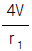
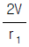
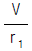
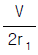
(정답률: 26%)
14. 전위함수에서 라플라스방정식을 만족하지 않는 것은?
- V=rcosθ+φ
- V=x2-y2+z2
- V=ρcosφ+z
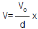
(정답률: 55%)
15. 단면적 S, 길이 ℓ , 투자율 μ인 자성체의 자기회로에 권선을 N회 감아서 I의 전류를 흐르게 할 때 자속은?
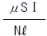
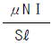
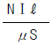
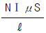
(정답률: 77%)
16. N회의 권선에 최대값 1V, 주파수 f[Hz]인 기전력을 유기 시키기 위한 쇄교자속의 최대값은 몇 Wb 인가?
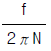
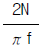
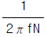
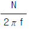
(정답률: 59%)
17. 반지름 a, b인 두 구상 도체 전극이 도전률 K인 매질속에 중심거리 r만큼 떨어져 놓여 있다. 양 전극간의 저항은? (단, r≫a, b 이다.)
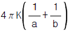
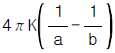
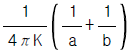
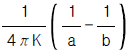
(정답률: 64%)
18. 진공 중에 있어서의 전자파의 속도(단위: m/s)가 아닌것은?
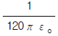
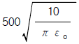
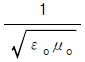
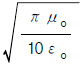
(정답률: 53%)
19. 단면적 s[m2], 단위 길이에 대한 권수가 n[회/m]인 무한히 긴 솔레노이드의 단위 길이당의 자기인덕턴스는 몇 H/m 인가?
- μsn
- μsn2
- μs2n2
- μs2n
(정답률: 79%)
20. 공극을 가진 환상솔레노이드에서 총 권수 N회, 철심의 투자율 μ[H/m], 단면적 S[m2], 길이 ℓ [m]이고 공극의 길이가 δ[m]일 때 공극부에 자속밀도 B[Wb/m2]을 얻기 위해서는 몇 A 의 전류를 흘려야 하는가?
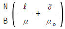
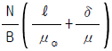
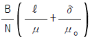
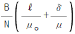
(정답률: 48%)
2과목: 전력공학
21. 송전계통의 한 부분이 그림에서와 같이 Y-Y로 3상 변압기가 결선되고 1차측은 비접지로 2차측은 접지로 되어 있을 경우 영상전류는?
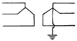
- 1차측 선로에만 흐를 수 있다.
- 2차측 선로에만 흐를 수 있다.
- 1차 및 2차측 선로에 모두 다 흐를 수 있다.
- 1차 및 2차측 선로에 모두 다 흐를 수 없다.
(정답률: 28%)
22. 옥내배선에 사용하는 전선의 굵기를 결정하는데 고려하지 않아도 되는 것은?
- 기계적 강도
- 전압강하
- 허용전류
- 절연저항
(정답률: 59%)
23. 직렬축전기를 선로에 삽입할 때의 이점이 아닌 것은?
- 선로의 인덕턴스를 보상한다.
- 수전단의 전압변동률을 줄인다.
- 정태안정도를 증가한다.
- 역률을 개선한다.
(정답률: 53%)
24. A, B 및 C상 전류를 각각 I a , Ib 및 Ic라 할 때
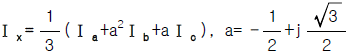
으로 표시되는 Ix 는 어떤 전류인가?- 정상전류
- 역상전류
- 영상전류
- 역상전류와 영상전류의 합
(정답률: 66%)
25. 배전용 변전소의 주변압기로 주로 사용되는 것은?
- 단권변압기
- 삼권선변압기
- 체강변압기
- 체승변압기
(정답률: 57%)
26. 배전방식에서 루프계통에 대한 설명으로 옳은 것은?
- 일반적으로 배전변압기나 2차변전소에 대하여 1개의 공급회로를 가지고 있다.
- 계전방식이 비교적 간단하다.
- 공급의 계속성은 없으나 증설이 용이하며, 초기 설비비가 저렴하다.
- 전압 변동률이 방사상계통보다 좋고 부하를 균등히 할 수 있다.
(정답률: 50%)
27. 배전계통에서 전력용 콘덴서를 설치하는 목적으로 다음중 가장 타당한 것은?
- 전력손실 감소
- 개폐기의 타단 능력 증대
- 고장시 영상전류 감소
- 변압기 손실 감소
(정답률: 68%)
28. 직류 송전방식에 대한 설명으로 틀린 것은?
- 케이블 송전일 경우 유전손이 없기 때문에 교류방식보다 유리하다.
- 선로의 절연이 교류방식보다 용이하다.
- 리액턴스 또는 위상각에 대해서 고려할 필요가 없다.
- 비동기 연계가 불가능하므로 주파수가 다른 계통간의 연계가 불가능하다.
(정답률: 66%)
29. 발전 전력량 E[kWh], 연료 소비량 W[kg], 연료의 발열량 C[kcal/kg]인 화력발전소의 열효율 η[%]는?
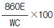
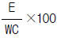
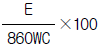
(정답률: 68%)
30. "전선의 단위길이내에서 연간에 손실되는 전력량에 대한 전기요금과 단위길이의 전선값에 대한 금리, 감가상각비 등의 년간 경비의 합계가 같게 되는 전선 단면적이 가장 경제적인 전선의 단면적이다." 이것은 누구의 법칙인가?
- 뉴크의 법칙
- 켈빈의 법칙
- 플레밍의 법칙
- 스틸의 법칙
(정답률: 68%)
31. 개폐 서지 이상전압의 발생을 억제 할 목적으로 설치하는 것은?
- 단로기
- 차단기
- 리액터
- 개폐저항기
(정답률: 71%)
32. 인터록(interlock)에 대한 설명이 맞는 것은?
- 차단기가 닫혀 있어야 단로기를 닫을 수 있다.
- 차단기가 열려 있어야 단로기를 닫을 수 있다.
- 차단기와 단로기를 별도로 닫고, 열 수 있어야 한다.
- 조작자의 의중에 따라 개폐되어야 한다.
(정답률: 70%)
33. 500kVA의 단상변압기 3대를 사용해서 △결선에 의하여 급전하고 있는 경우 1대의 변압기가 고장나 이것을 제거시키고 V결선으로 운전할 때, 이 때의 부하가 1000kVA라면 나머지 2대의 변압기는 약 몇 % 의 과부하가 되는가?
- 115
- 120
- 125
- 130
(정답률: 43%)
34. 그림과 같은 회로에서 송전단의 전압 및 역률 E1, cosθ1, 수전단의 전압 및 역률 E2, cosθ2일 때 전류 I는?
(정답률: 33%)
35. 전력손실이 없는 송전선로에서 서지파(진행파)가 진행하는 속도는 어떻게 표시되는가? (단, L: 단위선로 길이당 인덕턴스, C: 단위선로 길이당 커패시턴스이다.)
(정답률: 65%)
36. 송전선로의 중성점을 접지시키는 목적은?
- 동량의 절감
- 송전용량의 증가
- 이상전압의 방지
- 전압강하의 감소
(정답률: 67%)
37. 6.6㎸, 60Hz, 3상3선식 비접지식에서 선로의 길이가 10km이고 1선의 대지정전용량이 0.0⑤㎌/km일 때 1선 지락시의 고장전류 Ig[A]의 범위로 옳은 것은?
- Ig ＜ 1
- I ≤ Ig ＜ 2
- 2 ≤ Ig ＜ 3
- 3 ≤ Ig ＜ 4
(정답률: 54%)
38. 펠톤(Pelton)수차에 있어서 노즐로부터의 분출수의 속도를 v1, 버켓(bucket)의 주변속도를 u 라 할 때 이론상 수차의 효율이 최대로 되는 경우는?
(정답률: 21%)
39. 그림과 같은 계통에서 송전선의 S점에 3상 단락고장이 발생하였다면 고장전력은 약 몇 MVA 인가? (단, 발전기 G1, G2의 %과도리액턴스 및 변압기의 %리액턴스는 각각 자기용량기준으로 25%, 25%, 10%이고 변압기에서 S점까지의 %리액턴스는 100MVA기준으로 5%라고 한다.)
- 82
- 133
- 154
- 250
(정답률: 43%)
40. 원자로의 냉각재가 갖추어야 할 조건으로 틀린 것은?
- 열용량이 작을 것
- 중성자의 흡수 단면적이 작을 것
- 냉각재와 접촉하는 재료를 부식하지 않을 것
- 중성자의 흡수 단면적이 큰 불순물을 포함하지 않을 것
(정답률: 60%)
3과목: 전기기기
41. 그림과 같은 변압기에서 1차 전류는 얼마인가?
- 0.8 [A]
- 8 [A]
- 10 [A]
- 20 [A]
(정답률: 48%)
42. 일정한 전압으로 운전되고 있는 직류 발전기의 손실이 a +bI2으로 표시될 때 최대 효율이 되는 전류를 나타내는 것은? (단, a,b는 정수이다.)
- a/b
- b/a
(정답률: 47%)
43. 기중차단기와 배선용 차단기의 보호협조시에 단락, 과전류 보호방식이 아닌 것은?
- 전용량차단방식
- 캐스케이드(Cascade)차단방식
- 선택차단방식
- 한류차단방식
(정답률: 27%)
44. 변압기의 규약 효율 산출에 필요한 기본요건이 아닌 것은?
- 파형은 정현파를 기준으로 한다.
- 별도의 지정이 없는 경우 역률은 100 % 기준이다.
- 손실은 각권선의 부하손의 합과 무부하손의 합이다.
- 부하손은 40 ℃ 를 기준으로 보정한 값을 사용한다.
(정답률: 63%)
45. 동기 발전기에서 앞선 전류가 흐를 때 어떤 작용을 하는 가?
- 감자작용
- 증자작용
- 교차 자화작용
- 아무 작용도 하지 않음
(정답률: 49%)
46. 발전기의 단자부근에서 단락이 일어났다고 하면 단락전류는?
- 계속 증가한다.
- 발전기가 즉시 정지한다.
- 일정한 큰 전류가 흐른다.
- 처음은 큰 전류이나 점차로 감소한다.
(정답률: 67%)
47. 유도전동기에서 2차전류 /2를 1차측으로 환산한 /2'는? (단, α 는 권수비, β 는 상수비이다.)
- α β /2
(정답률: 22%)
48. 직류분권 발전기의 극수 8, 전기자 총도체수 600으로 매분 800회전할 때 유도기전력이 110[V]라 한다. 전기자 권선이 중권일 때 매극의 자속수[Wb]는?
- 0.03104
- 0.02375
- 0.01014
- 0.01375
(정답률: 55%)
49. 역률100 % 일 때의 전압변동률 ε 은 어떻게 표시되는가?
- % 저항 강하
- % 리액턴스 강하
- % 써셉턴스 강하
- % 임피던스 전압
(정답률: 65%)
50. 3상 동기발전기에 유기기전력 보다 90° 뒤진 전기자 전류가 흐를 때 전기자 반작용은?
- 교차 자화 작용한다.
- 증자작용을 한다.
- 자기여자 작용을 한다.
- 감자 작용을 한다.
(정답률: 53%)
51. 6극, 단중파권, 전기자 도체수 250 의 직류 발전기가 1200[rpm]으로 회전할 때 유기기전력이 600[V]이면, 매극당 자속은?
- 0.019 [Wb]
- 0.002 [Wb]
- 0.04 [Wb]
- 0.12 [Wb]
(정답률: 53%)
52. 변압기에서 콘서베이터의 용도는?
- 통풍장치
- 변압유의 열화방지
- 강제순환
- 코로나 방지
(정답률: 69%)
53. 유도 전동기에 게르게스(Gorges)현상이 생기는 슬립은 대략 얼마인가?
- 0.25
- 0.50
- 0.70
- 0.80
(정답률: 58%)
54. 3상 유도전압 조정기의 동작원리는?
- 회전자계에 의한 유도작용을 이용하여 2차전압의 위상전압 조정에 따라 변화한다.
- 교번자계의 전자유도작용을 이용한다.
- 충전된 두 물체 사이에 작용하는 힘
- 두 전류 사이에 작용하는 힘
(정답률: 56%)
55. 100[kW], 230[V] 자여자식 분권 발전기에서 전기자 회로저항이 0.⑤[Ω]이고 계자 회로저항이 57.5[Ω]이다. 이 발전기가 정격전압 전부하에서 운전할 때 유기전압을 계산하면?
- 232[V]
- 242[V]
- 252[V]
- 262[V]
(정답률: 46%)
56. 동기조상기의 여자전류를 줄이면?
- 콘덴서로 작용
- 리액터로 사용
- 진상 전류로 됨
- 저항손의 보상
(정답률: 55%)
57. 3상 유도 전동기에서 제 5고조파에 의한 기자력의 회전방향 및 속도가 기본파 회전자계에 대한 관계는?
- 기본파와 같은 방향이고 5배의 속도
- 기본파와 역방향이고 5배의 속도
- 기본파와 같은 방향이고 1/5배의 속도
- 기본파와 역방향이고 1/5배의 속도
(정답률: 29%)
58. 어떤 정류회로의 부하전압이 200[V]이고 맥동률 4[%]이면 교류분은 몇 [V] 포함되어 있는가?
- 18
- 12
- 8
- 4
(정답률: 64%)
59. 다음중 서보모터가 갖추어야 할 조건이 아닌 것은?
- 기동토크가 클 것
- 토크속도곡선이 수하특성을 가질 것
- 회전자를 굵고 짧게 할 것
- 전압이 0 이 되었을 때 신속하게 정지할 것
(정답률: 52%)
60. 다음은 다이리스터의 래칭(latching)전류에 관한 설명이다. 옳은 것은?
- 다이리스터의 게이트를 개방한 상태에서 전압을 상승 시킬 때 흐르는 순시전류
- 다이리스터의 게이트와 캐소드 사이에 흐르는 순시전류
- 다이리스터의 턴온(turn-on)후 게이트의 전류가 0 이 되어도 온(on)를 유지하기 위한 최소전류
- 도통중인 다이리스터가 턴오프(turn-off)되는 전류
(정답률: 51%)
4과목: 회로이론 및 제어공학
61. 논리식 A+AB를 간단히 계산한 결과는?
- A
- A+B
(정답률: 55%)
62. 대칭 좌표법에서 불평형율을 나타내는 것은?
(정답률: 66%)
63. 그림과 같은 극좌표 선도를 갖는 계통의 전달함수는?
(정답률: 52%)
64. 그림과 같은 회로에서 2[Ω ]의 단자 전압[V]은?
- 3
- 4
- 6
- 8
(정답률: 51%)
65. 동작중 속응도와 정상 편차에서 최적 제어가 되는 것은?
- PI동작
- P동작
- PD동작
- PID동작
(정답률: 56%)
66. 어떤 부하에 V=80+j60[V]의 전압을 가하여 I=4+j2[A]의 전류가 흘렀을 경우, 이 부하의 역률과 무효율은?
- 0.8, 0.6
- 0.894, 0.448
- 0.916, 0.401
- 0.984, 0.179
(정답률: 39%)
67. 어떤 4단자망의 입력단자 1-1'사이의 영상 임피던스 Z01과 출력단자 2-2'사이의 영상 임피던스 Z02가 같게 되려면 4단자 정수 사이에 어떠한 관계가 있어야 하는가?
- BC=AD
- AB=CD
- B=C
- A=D
(정답률: 51%)
68. 그림과 같은 회로에서 스위치 S 를 t=0 에서 닫을 때 t=0 에서의 전류 i(o) [A]는? (단, Vc(0)는 C의 초기전압이며 20[V]이다.)
- 0
- 4
- 5
- 10
(정답률: 28%)
69. 다음은 s-평면에 극점(x)과 영점(o)을 도시한 것이다. 나이퀴스트 안정도 판별법으로 안정도를 알아내기 위하여 Z, P의 값을 알아야 한다. 이를 바르게 나타낸 것은?
- Z=3, P=3
- Z=1, P=2
- Z=2, P=1
- Z=1, P=3
(정답률: 27%)
70. 무한장 무손실 전송선로에서 어느 지점의 전압이 10[V]이었다. 이 선로의 인덕턴스가 4[μH/m]이고, 캐패시턴스가 0.01[μF/m]일 때, 이 지점에서의 전류는 몇 [A]인가?
- 0.1
- 0.5
- 1
- 2
(정답률: 46%)
71. 어떤 정현파 전압의 평균값이 191[V]이면 최대값[V]은?
- 약 300
- 약 400
- 약 500
- 약 600
(정답률: 40%)
72. 다음의 상태방정식의 설명 중 옳은 것은?
- 이 시스템은 가제어이다.
- 이 시스템은 가제어가 아니다.
- 이 시스템은 가제어가 아니고 가관측이다.
- 가제어성 여부를 따질 수 없다.
(정답률: 21%)
73. 전달함수가 G(s)H(s)= 인 K≥ 0의 근궤적에서 분지점은?
- -0.93
- -5.74
- -1.25
- -9.5
(정답률: 23%)
74. 전원의 내부임피던스가 순저항 R과 리액턴스 X로 구성되고 외부에 부하저항 RL을 연결하여 최대전력을 전달하려면 RL의 값은?
- RL=R+X
- RL=R
(정답률: 54%)
75. R=50[Ω], L=200[mH]의 직렬회로에 주파수 50[Hz]의 교류 전원에 대한 역률[%]은?
- 62.3
- 72.3
- 82.3
- 92.3
(정답률: 47%)
76. 주파수를 제어하고자 하는 경우 이는 어느 제어에 속하는 가?
- 비율제어
- 추종제어
- 비례제어
- 정치제어
(정답률: 34%)
77. 계단함수 us(t)에 상수 5를 곱해서 라플라스 변환식을 구하면?
- s/5
- 5/s
(정답률: 52%)
78. 라플라스 변환함수 F(s)= 에 대한 역변환 함수 f(t)는?
- e-2t cos 3t
- e-3t sin 2t
- e3t cos 2t
- e2t sin 3t
(정답률: 46%)
79. 개루프 전달함수 G(s)H(s)= 의 근궤적이 jω 축과 교차하는 점은?
- ω =± 2.828[rad/sec]
- ω =± 1.414[rad/sec]
- ω =± 5.657[rad/sec]
- ω =± 14.14[rad/sec]
(정답률: 20%)
80. 다음의 상태방정식으로 표시되는 제어계가 있다. 이 방정식의 값은 어떻게 되는가? (단, X(0)는 초기상태 벡터이다.)
- e-AtX(0)
- eAtX(0)
- Ae-AtX(0)
- AeAtX(0)
(정답률: 26%)
5과목: 전기설비기술기준 및 판단기준
81. 전로를 대지로부터 반드시 절연하여야 하는 것은?
- 전로의 중성점에 접지공사를 하는 경우의 접지점
- 계기용변성기의 2차측 전로에 접지공사를 하는 경우의 접지점
- 시험용변압기
- 저압 가공전선로의 접지측 전선
(정답률: 33%)
82. 옥외 백열전등의 인하선으로 지표상의 높이 몇 m 미만의 부분은 전선에 지름 1.6mm의 연동선과 동등이상의 세기 및 굵기의 절연전선을 사용하여야 하는가?
- 2.5
- 3
- 3.5
- 4
(정답률: 38%)
83. 용량이 몇 kVA 이상인 조상기에는 그 내부에 고장이 생긴 경우에 자동적으로 이를 전로로부터 차단하는 장치를 하여야 하는가?
- 3000
- 5000
- 10000
- 15000
(정답률: 51%)
84. 사용전압이 25000V를 넘고 60000V이하인 특별고압 가공 전선로에서 전화선로의 길이 12km마다의 유도전류는 몇 μA를 넘지 아니하도록 하여야 하는가?
- 1
- 2
- 3
- 5
(정답률: 56%)
85. 직류귀선은 귀선용 궤조와 궤조간 및 궤조의 바깥쪽 몇 cm 이내에 시설하는 부분 이외에는 대지로부터 절연하여야 하는가?
- 15
- 20
- 25
- 30
(정답률: 26%)
86. 저압 가공전선로의 지지물에 시설하는 통신선 또는 이에 직접 접속하는 가공통신선을 횡단보도교의 위에 시설하는 경우에는 노면상 몇 m 이상의 높이로 시설하면 되는가? (단, 통신선은 절연전선과 동등 이상의 절연효력이 있는 것이라고 한다.)
- 3
- 3.5
- 4
- 4.5
(정답률: 26%)
87. 고압 가공전선을 시가지외에 시설할 때, 전선으로 사용되는 경동선의 최소 굵기는 몇 mm 인가?
- 2.6
- 3.2
- 4.0
- 5.0
(정답률: 37%)
88. 고압 지중케이블로서 직접 매설식에 의하여 견고한 트라프 기타 방호물에 넣지 않고 시설할 수 있는 케이블은? (단, "보기"항의 케이블은 개장(改裝)하지 않은 것임)
- 미네럴인슈레이션케이블
- 콤바인덕트케이블
- 클로로프렌외장케이블
- 고무외장케이블
(정답률: 49%)
89. 사용전압이 220V인 경우의 애자사용공사에서 전선과 조영재사이의 이격거리는 몇 cm 이상인가?
- 2.5
- 4.5
- 6
- 8
(정답률: 42%)
90. 고압 가공전선로의 전선으로 사용한 경동선은 안전률이 얼마 이상인 이도로 시설하여야 하는가?
- 2.0
- 2.2
- 2.5
- 3.0
(정답률: 49%)
91. 수소냉각식 발전기의 시설기준을 잘못 설명한 것은?
- 발전기는 기밀구조의 것이고, 또한 수소가 대기압에서 폭발하는 경우에 생기는 압력에 견디는 강도를 가지는 것일 것
- 발전기안의 수소온도를 계측하는 장치를 시설할 것
- 발전기안의 수소의 압력을 계측하는 장치 및 그 압력이 현저히 변동한 경우에 이를 경보하는 장치를 시설할 것
- 발전기안의 수소의 순도가 85%이상으로 상승하는 경우는 자동차단하는 장치를 시설할 것
(정답률: 45%)
92. 최대사용전압이 7000V인 회전기의 절연내력시험은 몇 V의 시험전압을 권선과 대지간에 가하여 10분간 견디어야 하는가?
- 6440
- 7700
- 8750
- 1⑤00
(정답률: 43%)
93. 345kV 가공전선이 154kV 가공전선과 교차하는 경우 이들 양 전선 상호간의 이격거리는 몇 m 이상인가?
- 4.48
- 4.96
- 5.48
- 5.82
(정답률: 42%)
94. 사용전압 22.9kV인 가공전선로의 중성선 다중접지식에 사용되는 접지선의 굵기는 지름 몇 mm 의 연동선 또는 이와 동등이상의 굵기로서 고장전류를 안전하게 통할 수 있는 것이어야 하는가? (단, 전로에 지기가 생긴 경우 2초안에 전로로부터 자동 차단하는 장치를 하였다.)(오류 신고가 접수된 문제입니다. 반드시 정답과 해설을 확인하시기 바랍니다.)
- 2.0
- 2.6
- 3.2
- 4.0
(정답률: 22%)
95. 전자개폐기의 조작회로 또는 초인벨, 경보벨 등에 접속하는 전로로서 최대사용전압이 60V 이하인 것으로 대지 전압이 몇 V 이하인 강전류 전기의 전송에 사용하는 전로와 변압기로 결합되는 것을 소세력회로라 하는가?
- 100
- 150
- 300
- 600
(정답률: 49%)
96. "제2차 접근상태"라 함은 가공전선이 다른 시설물과 접근하는 경우에 그 가공전선이 다른 시설물의 위쪽 또는 옆측에서 수평거리로 몇 m 미만인 곳에 시설되는 상태를 말하는가?
- 1.2
- 2
- 2.5
- 3
(정답률: 46%)
97. 가공전선로에 사용하는 지지물의 강도 계산에 적용하는 병종풍압하중은 갑종풍압하중의 몇 % 를 기초로 하여 계산한 것인가?
- 30
- 50
- 80
- 110
(정답률: 55%)
98. 저압 옥내배선공사를 할 때 반드시 절연전선이 아니라도 상관없는 공사는?
- 합성수지관공사
- 금속관공사
- 버스덕트공사
- 플로어덕트공사
(정답률: 36%)
99. 교통신호등의 제어장치의 금속제 외함에는 몇 종 접지공사를 하여야 하는가?(관련 규정 개정전 문제로 여기서는 기존 정답인 3번을 누르면 정답 처리됩니다. 자세한 내용은 해설을 참고하세요.)
- 제1종
- 제2종
- 제3종
- 특별제3종
(정답률: 47%)
100. 전력계통의 운용에 관한 지시를 하는 곳은?
- 급전소
- 개폐소
- 변전소
- 발전소
(정답률: 47%)